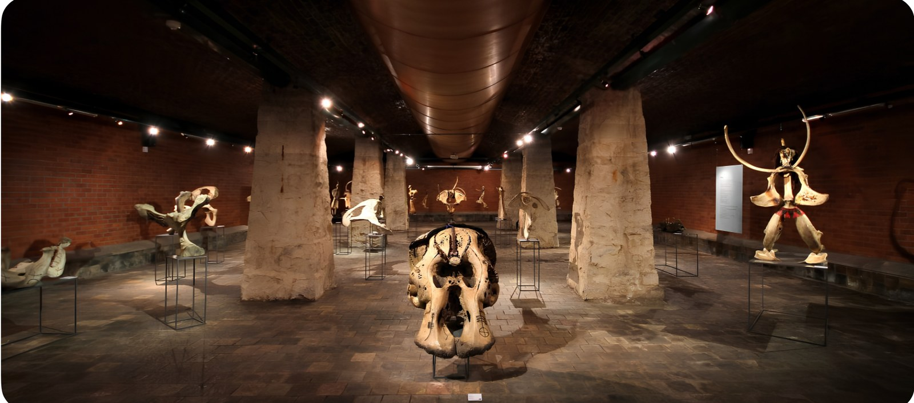

The workshop — the great hall of making
Walkthroughs by appointment.
The walkthrough
Four rooms, walked in order.
01
The yard
Stone figures stand among the trees — the first works you meet, weathering in the open.
02
The workshop
The great hall of making — hundreds of works standing where the chisel left them.
03
The archive room
Where each work is photographed, measured, and annotated — the studio becoming its own record.
04
The teaching floor
Learners in a circle among the sculptures — the room where the knowledge is handed on.
The Materials
Bone
Memory of the body — ancestors made tangible.
Bronze
Endurance — the poured and the permanent, made to outlast forgetting.
Metal
Industry re-membered into witness — waste reassembled until it speaks.
Stone
Deep time, carved patiently — the land itself given a face.
Wood
The living grain of tradition — what grew, shaped into what remembers.
Found objects
What history left behind — gathered, reassembled, and made to speak.